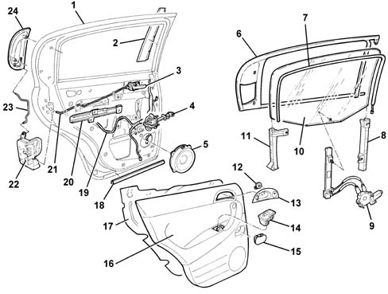

Introduction - PASSENGER COMPARTMENT REAR SIDE DOORS
- Path
- Descriptions > 70 FITTINGS > 7010 PASSENGER COMPARTMENT REAR SIDE DOORS > Introduction - PASSENGER COMPARTMENT REAR SIDE DOORS
- Kind
- system description
- Applies to
- all engines; all production periods
- Interactive page
- https://sloeber94.github.io/elrnDB-a147/en/#/3026119
Applies to: all engines; all production periods
SPECIFCATIONS
The rear doors have been designed with the structure and the panels not featuring any corners to reduce the risk of injury to the occupants.
The arrangement of the exterior opening handle is particularly innovative as it is fully integrated in the rear door pillar.
The locks and control levers are protected against break ins by a shield which prevents access to the mechanisms from the outside.
The side panel features:
- an armrest which contains the controls for the electric windows and the opening/closing handle;
- interior door opening lever;
- two speakers, one of which is housed in the door opening lever trim;
The sliding glass is made from thermal glass and is moved by means of a mechanism with a guided cable. The system is available, on request, with an anti-crush safety device, housed in the upper seal, which stops the ascent of the window if there is an obstacle in between as the window is closing.
The trim on the upper profile of the door, by the glass, and the glass scraper trims, ensure a perfect seal and the absence of aerodynamic wind noise.
COMPOSITION
Exploded view of front door

1- Door structure 2 - Pillar outer trim 3 - Interior handle 4 - Door check strap 5 - Speaker 6 - Lowering window channel 7 - Anti-crush safety sensor inner channel 8 - Front window guide 9 - Window opening mechanism 10 - Lowering window glass 11 - Rear window guide 12 - Tweeter 13 - Interior handle escutchion 14 - Electric window control switch 15 - Ashtray 16 - Inner panel 17 - Water guard protection 18 - Lower seal 19 - Door wiring 20 - Anti-break in partition 21 - Interior handle idler rod 22 - Door lock 23 - Exterior handle idler rod 24 - Exterior handle